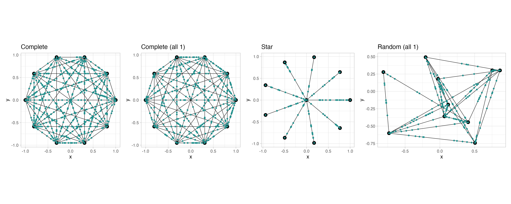
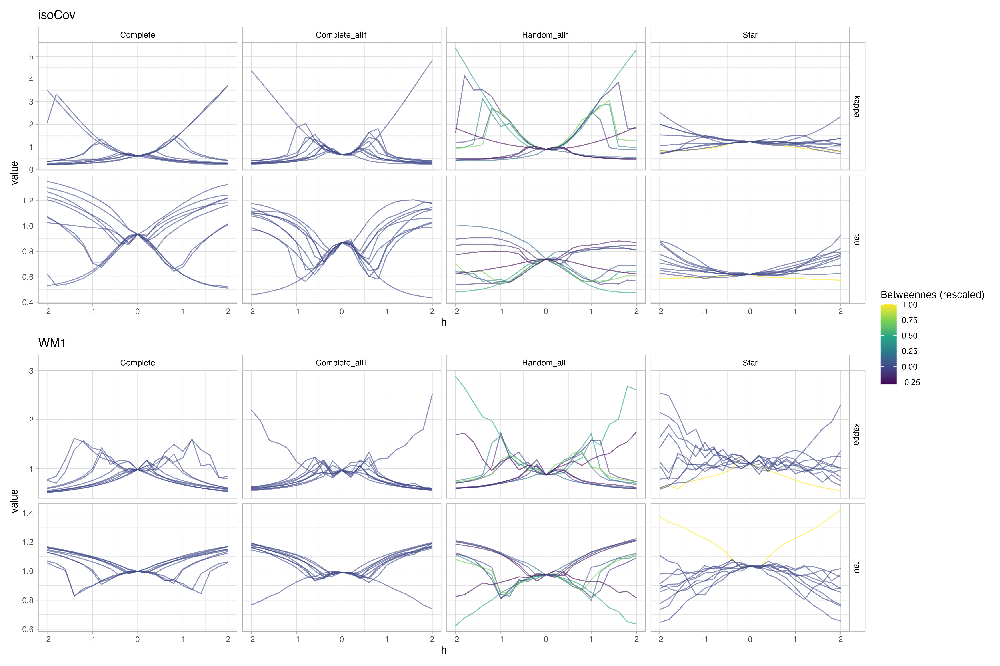
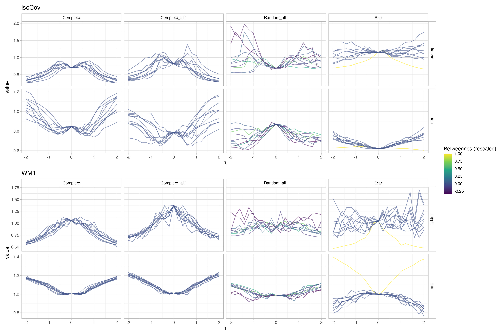
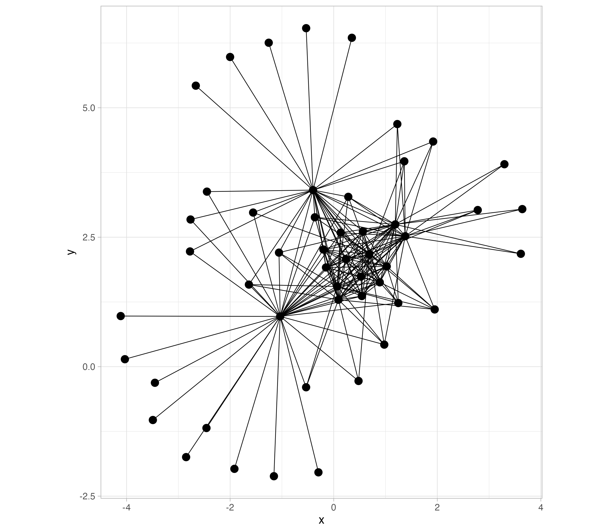
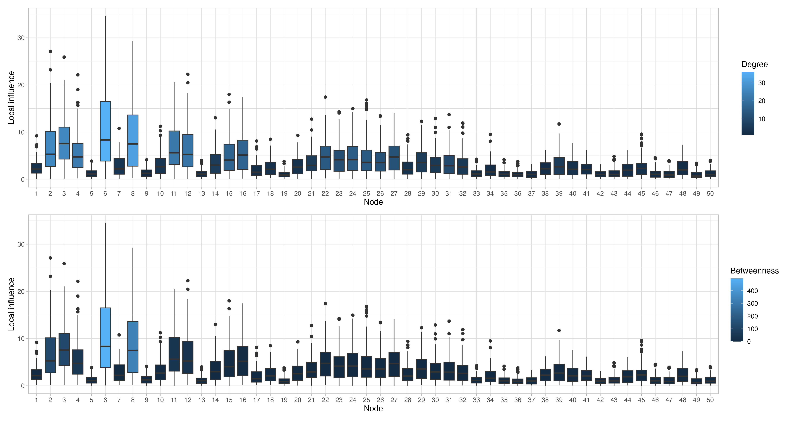

Meeting KAUST
About Euclidean graphs
The definition of Euclidean graphs given by Anderes et al. (2020) is the following:


The only condition is given by point c), the distance consistency. This condition resembles a triangular inequality (for this reason Euclidean?). It seems that a necessary (and maybe sufficient) condition to satisfy this property is the following: “if two vertices are connected by an edge, this must be the shortest path (under any chosen metric)”.
Therefore, it looks like we can transform a non-Euclidean graph by breaking any edge connecting two nodes, which does not represented the shortest path between the two, adding a new node and dividing the edge in two “sub”-edges.
For instance, in the cycle example the distance consistency implies that:
\[ \overline{e}_0 - \underline{e}_0 \leq \sum_{\mathcal{E}\ni e\neq e_0} (\overline{e}-\underline{e}), \]
which means that any edge cannot span more than half of the circumference. But if any edge violates this requirement, one can just break down the edge by adding a new node and having the condition satisfied.
- Is there any fallacy in this reasoning?
- If not, what then is the “true” meaning (and the effect) of having a 2-degree node in the network? We can add and remove them, and obtain Euclidean and non-Euclidean graphs.


Sensitivity analysis
We can perhaps reason about two directions of sensitivity analysis: model-related sensitivity or signal-related sensitivity.
We can refer to model-related sensitivity as the one regarding the robustness of a given model. For instance: parameter estimates, prediction accuracy, uncertainty calibration, etc..
Meanwhile, we can refer to signal-related sensitivity as the robustness of empirical-based estimates regarding functions defined on graphs, such as empirical variogram in spatial contexts.
Possibly for both types of sensitivities, we can consider two perturbation scenarios:
- Perturbation of the observed values in some point, given the network. Ideally, we would like to see and learn patterns for the robustness of the model estimates against some topological features of the network
- Perturbation of the network, given the observed values. It is perhaps meaningful if we observe the process only on the verteces and, e.g., we consider removing or adding edges.
For the simulations we rely on the R-package MetricGraph. The package allows us to manipulate networks, simulate data, and estimate some models. In particular, all simulated data comes from the Whittle-Matern process.
Model-related sensitivity
At this stage, the general experiment is given by the following procedure:
- Define a (Euclidean) metric graph.
- Simulate data from the WM model, fixing the hyperparameters. We can consider different data locations (we always include the network verteces).
- Consider different level h of perturbations of the data at the verteces.
- Fit the
WMmodel and theisoCovmodel, and look at the parameter estimates.
TODO In general, we can simulate the data also from the isoCov process by defining the locations, computing the pairwise resistance distances, and sample the associated multivariate Gaussian. This sounds more reasonable as in this way we can fairly compare the estimates to the true parameter values for both processes.
The Whittle-Matern field model (Bolin et al., 2023)
The WM model is defined through a SPDE on the graph (with proper notions of differential operators and boundary conditions on the graph): \[
(\kappa^2 - \Delta)^{\alpha/2}\tau u = W,
\] where \(W\) is the white noise process. Parameter \(\tau^2\) is related to the inverse of the variance, \(\kappa\) is related to the length-scale of the model, and \(\alpha\) to the smoothness. The above equation relates to the classical Matern covariance as follows: \[
r(d)=\frac{\Gamma(\nu)}{\tau^2\Gamma(\nu+1/2)\sqrt{4\pi}\kappa^{2\nu}}(\kappa d)^\nu \mathcal{K}_\nu(\kappa d),
\] considering \(\alpha = \nu + 1/2\). The R package has two different parametrizations: \((\nu,\sigma,\rho)\) and \((\alpha,\tau,\kappa)\), where \(\rho\) is named range and it is the practical correlation range (i.e, correlation less than 0.1 for \(d>\rho\)). The relation between the two parametrizations is the following:
\[ \begin{cases} \alpha = \nu + 1/2 \\ \rho = \sqrt{8\nu}/\kappa \\ \sigma^2 = \frac{\Gamma(\nu)}{\tau^2\Gamma(\nu+1/2)\sqrt{4\pi}\kappa^{2\nu}} \end{cases} \]
The isotropic (exponential) covariance model (Anderes et al, 2020)
The covariance function is the following: \[
r(d_R) = \tau^2 \text{exp}(- \kappa d_R),
\] where \(d_R\) is the resistance metric on the graph. The MetricGraph parameterization is given by \((\tau,\kappa)\), where this time \(\tau^2\) is proportional to the marginal variance, rather than the precision (confusing notation).
Simulations
We consider the following examples of networks. Networks Complete (all 1), Star, and Random (all1) have all edges of unitary length (also in order to guarantee distance consistency)

The data locations are one for each vertex, plus a number of point proportional to length of the edge (roughly 10 observations for each unit of length).
We simulate data from the WM process with \(\alpha = 1\), \(\tau = 1\), \(\kappa = 1\). We do nsim=20 simulations, with fixed locations, and compute the median estimates across simulations for the \(\tau\) and \(\kappa\) parameters for both WM and isoCov models. When fitting WM, we fix \(\alpha\) to the true value of 1.

Due to the unexpected asymmetry in the complete network, we consider another set of simulations where at each step we resample also the locations.

Signal-based sensitivity
Here we investigate the sensitivity of sample-based estimates of some quantities of interest. An example borrowed from spatial statistics is the variogram \[ 2\gamma(h) = \frac{1}{\mid N_h \mid} \sum_{(i,j)\in N_h} (Z_i - Z_h)^2. \] As showed in Genton and Ruiz-Gazen (2010), this quantity can be written as a quadratic form \(Z^\intercal A Z\) of the data values \(Z=(Z_1,\dots,Z_N)^\intercal\), for a certain symmetric matrix \(A\). It follows that we have analytical expressions for the local and asymptotic influences (Genton and RUiz-Gazen, 2010): \[ \tau_i(\hat{\theta},Z) = 2a_i^\intercal Z, \] where \(a_i\) is the vector given by the i-th row of \(A\).
In the context of networks, a quantity of interest is the graph Laplacian. There are multiple definitions of graph Laplacian, but the basic one for an undirected graph is given by a \(n\times n\) matrix \(L\) with entries \[ L_{ij} = \begin{cases} d_i & \text{if} \quad i=j \\ -1 & \text{if} \quad (i,j)\in E \\ 0 & \text{otherwise} \end{cases}, \] where \(d_i\) is the degree of the node (number of edges associated to that node). In case of a weigthed graph with weight \(w_{ij}\) for the edge \((i,j)\in E\), one generalization is given by: \[ L_{ij} = \begin{cases} w_i & \text{if} \quad i=j \\ -w_{ij} & \text{if} \quad (i,j)\in E \\ 0 & \text{otherwise} \end{cases}, \] where \(w_i\) is the sum of the weights of the edges connected to node \(i\).
Considering a vertex-valued function \(Z:V\rightarrow \mathbb{R}\), there exists a measure of the weighted-smoothness given by the graph Laplacian quandratic form:
\[ S_2(Z) := \sum_{(i,j)\in E} w_{ij}(Z_j - Z_i)^2 = Z^\intercal L Z. \] This resembles to some extent the variogram definition. Note that here the squared difference are computed between all connected vertices rather than at a fixed lag \(h\). Moreover, the larger the weight, the more important is the difference. Therefore, in our context we may want to choose: \[ w_{ij} = 1/d_{\cdot \mathcal{G}}(i,j), \qquad \forall (i,j)\in E, \] with either the geodesic or resistance distance.
The advantage of \(S_2(Z)\) is that it is a quadratic form, and thus we can leverage Genton and Ruiz-Gazen (2010) and directly compute the local influence for each vertex: \[ \tau_i(S_2,Z) = 2l_i^\intercal Z, \] with \(l_i\) the i-th row of the graph Laplacian \(L\).
TODO We can consider extension of this idea to all observations on graph (maybe not trivial), and other version of the Laplacian (normalized, etc..).
Simulations
We do the following experiment:
- We sample a network with a given node distribution.
- We simulate on the vertexes from
WMwith \(\alpha=\kappa=\tau=1\). - We compute the local influence of each node for a total of
nsim=100simulations.
In particular, we sample a network with a power-law distribution for the node degree. That is, the degree distribution is \(\propto 1/x^a\). We set \(a=1\). We normalize all the edge lengths to be equal to 1, in order to isolate the effect of the node degree on the result.


TODO Consider different topologies and include branch lengths.
Definitions
- Vertex closeness \[ c(v) = \frac{1}{\sum_{u\in V}d(u,v)} \]
- Vertex betweenness \[ b(v) = \sum_{s\neq t \neq v \in V}\frac{\sigma(s,t\mid v)}{\sigma(s,t)}, \] where \(\sigma(s,t)\) is the total number of shortest paths from \(s\) to \(t\), and \(\sigma(s,t\mid v)\) is the number of those passing through \(v\).
What is new
We are working on two fronts: model-based and sample-based sensitivity.
Sample-based sensitivity
We consider different quadratic forms or ratio of quadratic forms:
Graph Laplacian quandratic form \[ S_2(Z) := \sum_{(i,j)\in E} w_{ij}(Z_j - Z_i)^2 = Z^\intercal L Z. \]
Moran’s I, based on the graph adjacency matrix \[ I = \frac{\sum_{i,j=1}^n w_{ij} (Z_i - \bar{Z})^\intercal(Z_j - \bar{Z})}{\sum_{i=1}^n (Z_i - \bar{Z})^2}, \] where the weights are the entries of the adjacency matrix, i.e. \(w_{ij} = a_{ij} = I(e_{ij}\in E)\)
Moran’s I, based on the radius-1 ball in resistance distance. In other words, for each node we consider the radius-1 ball and assign weights \[ w^1_{ij} = \begin{cases} 1/d_R(v_i,v_j) & \text{if} \quad d_R(v_i,v_j)<1 \\ 0 & \text{otherwise} \end{cases} \] Given \(w_{ij}\), we consider the classical Moran’s I \[ I^1_R = \frac{\sum_{i,j=1}^n w^1_{ij} (Z_i - \bar{Z})^\intercal(Z_j - \bar{Z})}{\sum_{i=1}^n (Z_i - \bar{Z})^2}, \]
Raylegh quotient of the graph Laplacian \[ Q =\frac{Z^\intercal L Z}{Z^\intercal Z} \]
We sample a network approximately with the power-law degree distribution, that is: \[ P(\text{node has degree d}) = d^{-\beta} \]
Observations:
- Some topological node features partially explain the amount of local influence. For instance, the node degree, the betweenness, and the product of the two (degbet)
- However, these explanatory power is still partial
- The local influence seems to be “independent” of the the specific quadratic form, at least for some of the nodes. However, all the considered quadratic form are related (the matrix \(A\) depends on the topology). This is possibly not a restriction, as typically in applications this is the type of quadratic forms of interest.
The quantities \(I\), \(I^1_R\), and \(Q\) are ratios of quadratic forms (\(\Theta\)), whereas \(S_2\) is just a quadratic form (\(\theta\)): \[ \Theta = \frac{Z^\intercal A Z}{Z^\intercal B Z} \qquad \qquad \theta = Z^\intercal A Z. \] The local influence and the asymptotic influence in both cases are given by \[ \begin{aligned} \tau_i &= \frac{2}{Z^\intercal B Z}(a_i - \Theta b_i)^\intercal Z, \\ \nu_i &= \frac{a_{ii}}{b_{ii}}, \end{aligned} \qquad \qquad \begin{aligned} \tau_i &= 2a_i^\intercal Z, \\ \nu_i &= \infty. \end{aligned} \] Let us consider the local influence \(\tau_i\). With the previous plots, we consider the distribution of \(\tau_i\), across different realization of \(Z\). We have:
- \(\Theta = \Theta(Z,A,B)\), deterministic function
- \(Z = Z\mid A\), as typically \(A\) represent some topological information (e.g. adjacency matrix, Laplacian)
In general, \[ \tau_i = \tau_i(Z,A,B) \] and we are interested in \(\mathcal{L}(\tau_i\mid A, B)\). Can we try to compute/learn something about this distribution?
Consider also that we notice similar pattern between the local influence for the quadratic form (\(S_2\)) and the ratios of quadratic forms. Therefore, maybe it is easier to study the distribution of: \[ \tau_i = 2 a_i^\intercal Z. \]
Distributional properties of local influence for quadratic forms
Considering the previous analysis, we are mostly interesting in the marginal variances of the vector \(\tau = (\tau_1, \dots, \tau_n)^\intercal\). If we assume that the data come from a certain Gaussian process, we have \[ Z \sim \text{N}(0, \Sigma) \qquad \implies \qquad \tau \sim (0, 4\,A\Sigma A^\intercal). \] Therefore, the vector of marginal variances is given by \[ \text{var}(\tau) = \text{diag}(4\,A\Sigma A^\intercal) = 4 \,( A\circ(A\Sigma)) 1_n, \] where the operator \(\circ\) represent the Hadamard product, or elementwise product. We can expand the matrix product for the local influence of node \(i\), \[ \begin{aligned} \text{var}(\tau_i) &= 4 \sum_{j=1}^n \sum_{k=1}^n A_{ij} A_{ik} \Sigma_{kj} \\ &= 4 \sum_{j=1}^n \sum_{k=1}^n A_{ij} A_{ik} \text{Cov}(Z_j,Z_k). \end{aligned} \] Often, the matrix \(A\) that define the quadratic form is the adjacency matrix, or the Laplacian matrix of the graph, which has non-zero entries only for \(A_{ij}\) such that \((i,j)\in E\). Therefore, the result of the multiplication between \(A_{ij}\) and \(A_{ik}\) is non-zero only for the couples \((j,k)\in N_i\), where \(N_i\) is the set of the neighbour nodes of \(i\). We can rewrite the marginal variance as: \[ \begin{aligned} \text{var}(\tau_i) &= 8 \sum_{(i,j)\in N_i} A_{ij} A_{ik} \text{Cov}(Z_j,Z_k). \end{aligned} \] Clearly, the value of \(\text{Cov}(Z_j,Z_k)\) depends on the data generating process assumptions. However, in general we can believe this to be decreasing with the distance between \(Z_j\) and \(Z_k\).
We can leverage the above expression to build a model-free sensitivity score for each node, only based on the topological structure of the network. For example (just a first idea): \[ \text{score}(i) = 8 \sum_{(i,j)\in N_i} A_{ij} A_{ik} \, \text{exp}(-d(j,k)), \] where \(d(\cdot,\cdot)\) is a distance on the graph (e.g., geodesic or resistance). However, such a score may be reasonable only under isotropic model assumptions.
Isotropic model assumption (or data generation)
Under an isotropic Gaussian process model, we can try to derive further calculations. In particular, we consider the isoCov model, where the covariance function is given by \[
C(d) = \sigma^2\,\text{exp}(-\kappa d).
\] Let us consider the resistance metric on the graph. If we denote with \(\tilde{L}\) the Laplacian matrix considering the graph with weights equal to the inverse of the edge lengths (or distances), we can write the matrix of the pairwise resistance distances as: \[
R = -2L^+ + \text{diag}(\tilde{L}^+)^\intercal\otimes 1_n + 1_n^\intercal\otimes \text{diag}(\tilde{L}^+),
\] where \(\tilde{L}^+\) is the pseud-inverse of \(\tilde{L}\), and \(\otimes\) is the Kronecker product. If we consider the resistance distance between \(i\) and \(j\), this can be written as: \[
r_{ij} = -2\tilde{L}^+_{ij} + \tilde{L}^+_{ii} + \tilde{L}^+_{jj}.
\] Plugging-in this expression in the formula of the marginal variance of the local influence of a quadratic form, we obtain: \[
\begin{aligned}
\text{var}(\tau_i) &= 4 \sum_{j=1}^n \sum_{k=1}^n A_{ij} A_{ik} \text{Cov}(Z_j,Z_k) \\
&= 4 \sum_{j=1}^n \sum_{k=1}^n A_{ij} A_{ik} C(r_{jk}) \\
&= 4 \sum_{j=1}^n \sum_{k=1}^n A_{ij} A_{ik} \tilde{C}(\tilde{L}^+_{jj})\tilde{C}(\tilde{L}^+_{kk})\tilde{C}(-2\tilde{L}^+_{jk}) \\
&= 4 \sum_{j=1}^n \sum_{k=1}^n \left[A_{ij}\tilde{C}(\tilde{L}^+_{jj})\right] \, \left[A_{ik}\tilde{C}(\tilde{L}^+_{kk})\right] \,\tilde{C}(-2\tilde{L}^+_{jk})
\end{aligned},
\] where \(\tilde{C}(d) = (\sigma^2)^{1/3}\,\text{exp}(-\kappa d)\), and the above computations follow from considering that \(C(\cdot)\) is applied element-wise and it has an exponential form.
From the above results, it seems that also the marginal variance of the local influence for the ratio of quadratic forms is proportional (with a factor of 1000) to the marginal variance of the local influence of the quadratic form at the numerator of the ratio. This is a promising result in a way that a potential unique sensitivity-score can be used for both quadratic forms and ratios.
Next steps:
- Can we obtain a sensitivity-score only based on the adjacency matrix/Laplacian? Instead of depending on the specific quadratic form
- How to generalise on process/data both on vertexes and edges?
- Does a potential model-free sensitivity-score for quadratic forms explain also the model-based sensitivity?
Model-based sensitivity